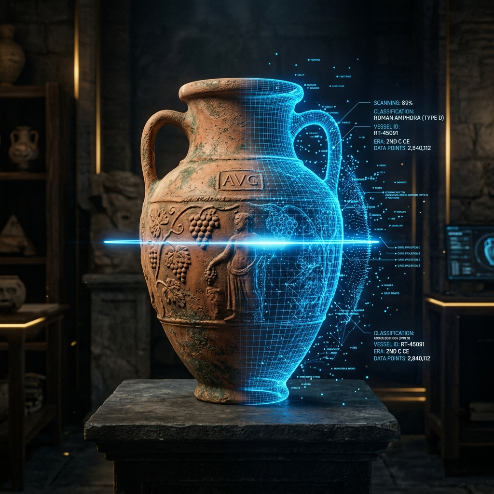
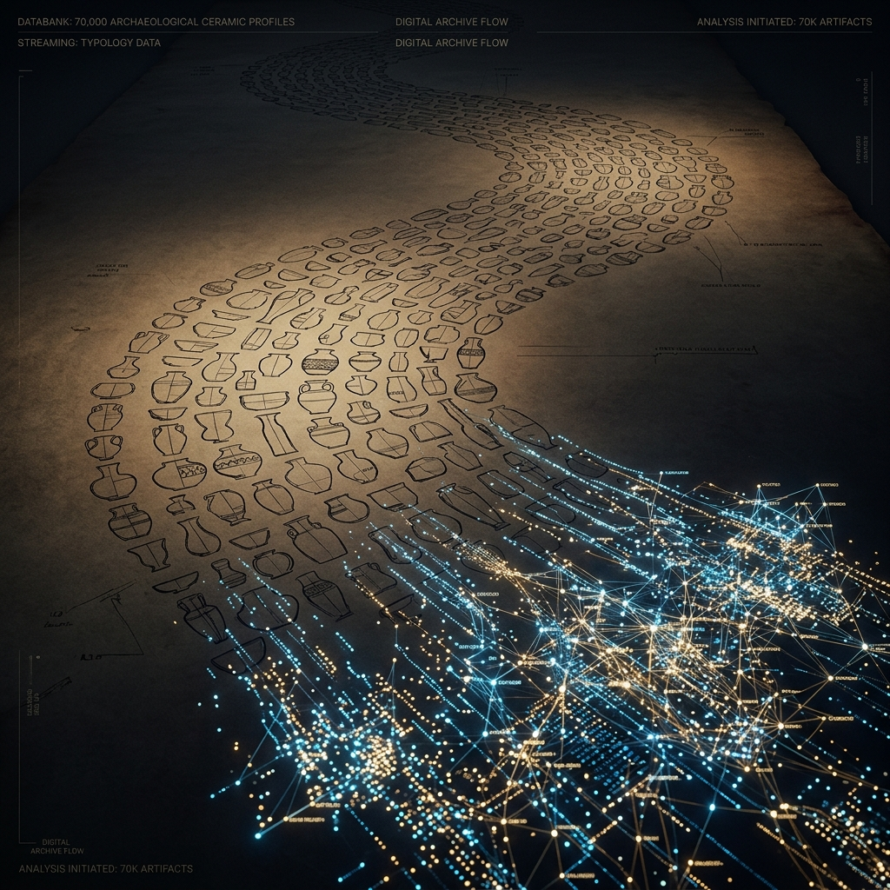

HERITAGE SCIENCE AUSTRIA 2.0
AI-Enabled Archeology
Decoding the history of Roman Carnuntum through automated classification of common ware pottery using cutting-edge Machine Learning.
EXPLORE PROJECT
Bridging Heritage and AI
Automated classification
Developing an innovative AI-based method for the automated classification and analysis of Roman common ware pottery from the UNESCO World Heritage site Carnuntum.
Sustainable Analysis
Enabling faster and more sustainable analysis of archaeological finds—offering new perspectives on Roman provincial history and material culture.
FAIR & CARE
All data, ML models, and tools will be made openly and sustainably available in line with international research infrastructure standards.
The LEGION Methodology
LEGION builds on a unique dataset of approximately 70,000 2D profile drawings collected over decades. These are enriched with detailed attributes like form, decoration, and chronology.
- ML & XAI: Cutting-edge Machine Learning and Explainable AI for transparent typochronology.
- Human-in-the-loop: Integrating archaeological expertise directly into the model training.
- Efficiency: Avoiding expensive 3D methods to facilitate daily archaeological practice.

Understanding History
Settlement Dynamics
Reconstructing phases of growth, crisis, and decline in Carnuntum’s urban history through pottery distribution patterns.
Trade & Identity
Uncovering trade networks, production centers, and cultural identities within the Roman province.
Digital Literacy
Promoting AI literacy and awareness through active science communication and public exhibitions.
Leading Institutions
ÖAI / ÖAW
Austrian Archaeological Institute
CVL / TU WIEN
Computer Vision Lab
STATE COLLECTIONS
Lower Austrian State Collections
ACDH-CH
Austrian Centre for Digital Humanities
Lead PI: Dominik Hagmann | Co-PIs: Martin Kampel, Sebastian Zambanini, Irene Ballester Campos